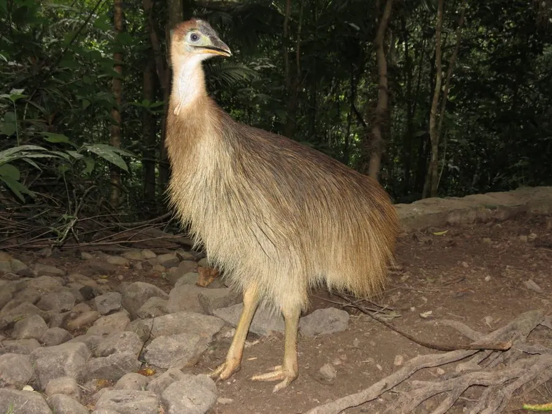

鸟类 · 动物界
鹤鸵 Casuarius casuarius

新几内亚与澳大利亚雨林中的大型走禽，头顶角质冠、颈部双垂红肉，内趾长爪锋利如刀，是世界上最危险的鸟类之一。
- 分类
- 门脊索动物门纲鸟纲目鹤鸵目科鹤鸵科属鹤鸵属
- 栖息环境
- 热带低地雨林与山地雨林的林下层，近河流与果树林
- 地理分布
- 新几内亚岛、印度尼西亚阿鲁群岛及澳大利亚昆士兰北部
- 保护级别
- IUCN 无危（LC）；澳大利亚种群受国家法律保护
物种志
鹤鸵体形高大，成年体高 1.5–1.8 米，体重 30–60 千克，雌鸟略大于雄鸟。头部裸皮呈蓝紫色，头顶有高耸的角质冠，颈侧裸露的皮肤呈鲜红或橙红，并垂下两条肉垂；全身羽毛黑色、呈毛发状，羽枝不连成羽片。最危险的是内侧脚趾上的长爪，可长达 10–12 厘米，形如匕首。
它们栖息于新几内亚与澳大利亚昆士兰北部的热带雨林，多单独活动，晨昏在林下层觅食落果、真菌、昆虫、蜗牛和小型脊椎动物，也会取食腐肉。鹤鸵奔跑迅速，可穿越密林、跃过倒木并游泳渡河，受惊或护雏时攻击性很强，会用双脚同时蹬踢，长爪可造成严重撕裂伤。繁殖期由雌鸟求偶，雄鸟独自孵卵约 50 天并育雏。雨林砍伐与车辆碰撞是其主要威胁，人工投喂会使其失去对人的戒心，增加冲突风险。
形态与习性
- 体高约 1.5–1.8 m，体重 30–60 kg
- 食性落果、真菌、昆虫、蜗牛与小型脊椎动物
- 繁殖雄鸟孵卵约 50 天，育雏约 9 个月
- 危险部位内趾长爪可达 10–12 cm，踢击可致重伤
- 奔跑速度林中奔跑可达 40–50 km/h，能跃过 1.5 m 障碍
- 头冠功能可能用于散热与传递低频声音
- 寿命野外约 20 年，饲养下可达 40 年
趣味知识
- 鹤鸵内趾上的爪子像一把弯刀，一脚踢出足以撕开皮肉。
- 它的羽毛呈毛发状，没有一般鸟类羽片间的钩连结构。
- 雄鸟负责孵卵和带雏，雌鸟产卵后便离开，另寻配偶。